Overview
-
Problem
Mualim needed an AI tutor for kids that felt natural, not bolted-on, for the Saudi Arabian market — a product two very different people had to trust at once: the child using it, and the parent deciding whether to let them.
-
Central Question
How do you design a single interface that feels safe, engaging, and genuinely useful to a child, while feeling transparent and trustworthy to the parent watching over them?
-
Result
Shipped an AI tutor experience that balances a child's engagement with a parent's trust — from first session through daily use, across web and mobile.
The full story
I was brought in as product design consultant, owning the work end to end: research, strategy, prototyping, and shipping. Mualim needed a tutor that made AI-driven learning approachable from the very first session, for kids as young as five.
Research
Designing for kids means designing for two audiences at once — the child actually using the product, and the parent or guardian deciding whether to trust it with their kid's learning. My UX research focused on understanding how each side needed to experience the product differently: what makes an AI tutor feel safe, engaging, and genuinely useful to a child, and what makes it feel trustworthy and transparent to the adult overseeing it. That split informed every decision that followed.
Design considerations
We explored different design languages and approaches to see which would resonate with kids aged 5 to 15. We needed something that reinforced learning with positive emotions, without overcomplicating the experience — including directions that didn't work and were ruled out along the way.
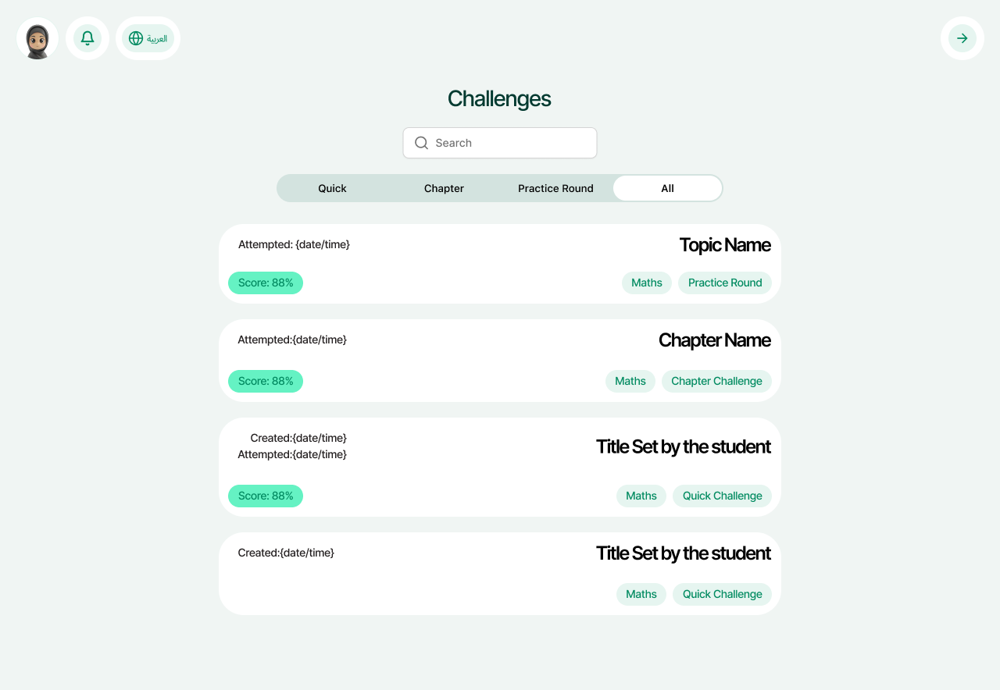
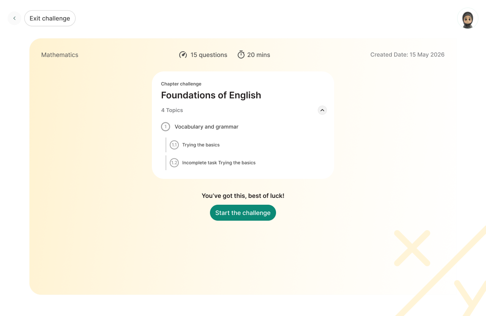
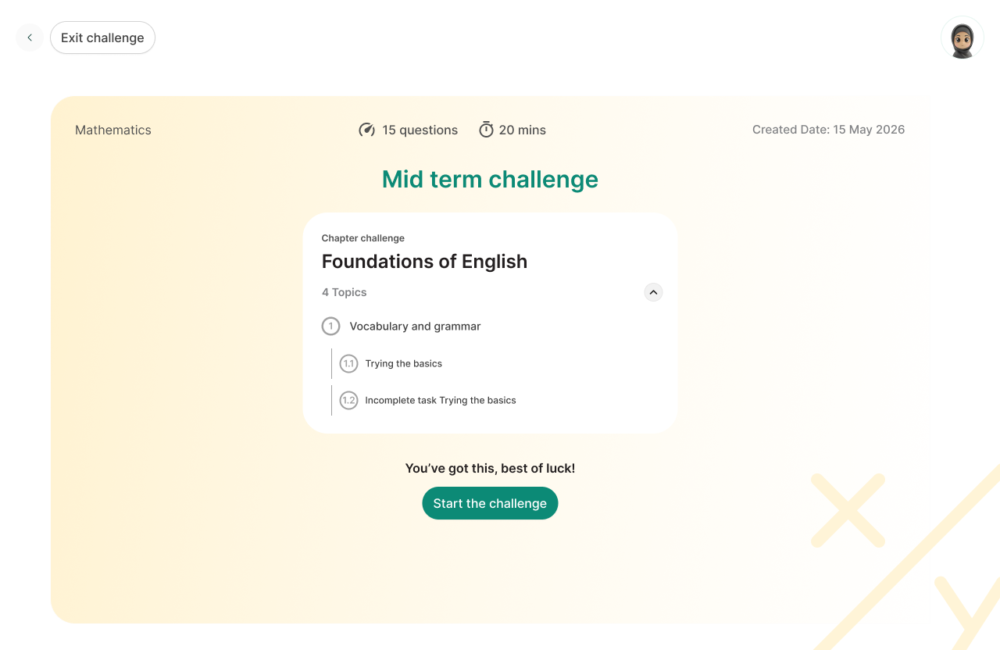
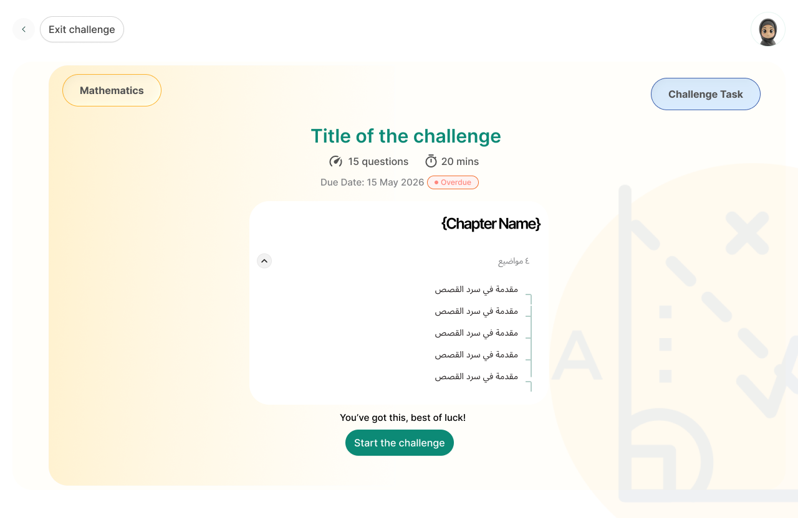
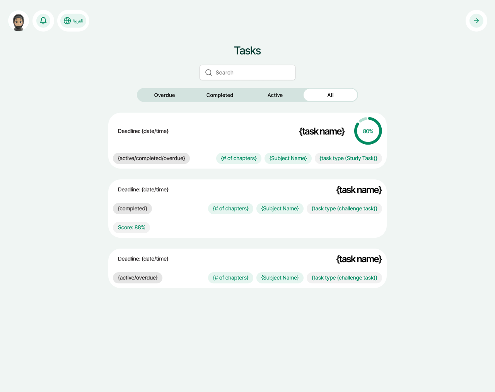
Core features
Three parts of the product carried the most weight in balancing a child's experience against a parent's trust.
The parent dashboard
One dashboard to check on their kids' progress — transparent enough to build trust without turning the child's learning into something that feels like it's being graded.
Attempting challenges
Challenges were designed to be easy to navigate, reduce cognitive load, and encourage kids to try again if they got stuck — with the option to easily ask the AI tutor for help along the way.
AI learning
Built around an unconventional approach to education — kids didn't need to memorize concepts, but to learn, unlearn, and relearn through iteration and goal-based learning.
Strategy
With the research in hand, I shaped the product strategy around how an AI tutor should actually behave with a young learner: how it introduces itself, how it paces a lesson, how it responds when a child gets something wrong, and how it surfaces progress back to a parent without making the experience feel like it's being graded. My goal was a strategy that treated "AI-driven learning" as a promise to make good on through interaction design, not just a label on the product.
Interface
Easy to use interface
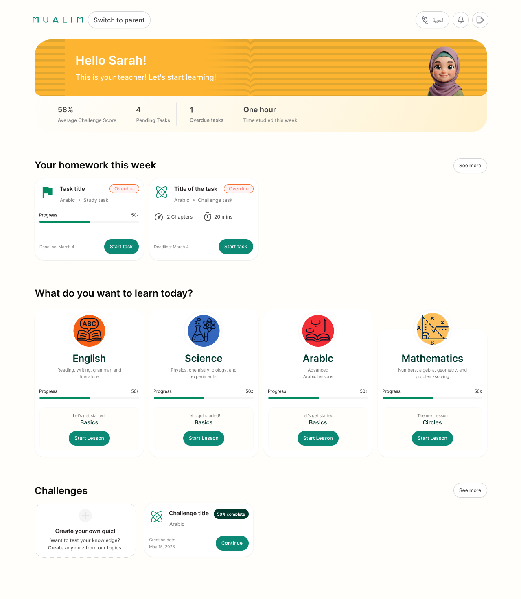
AI learning — simple and easy
Mobile responsive
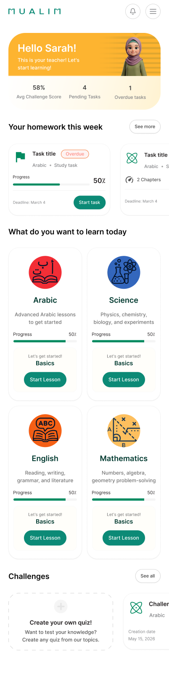
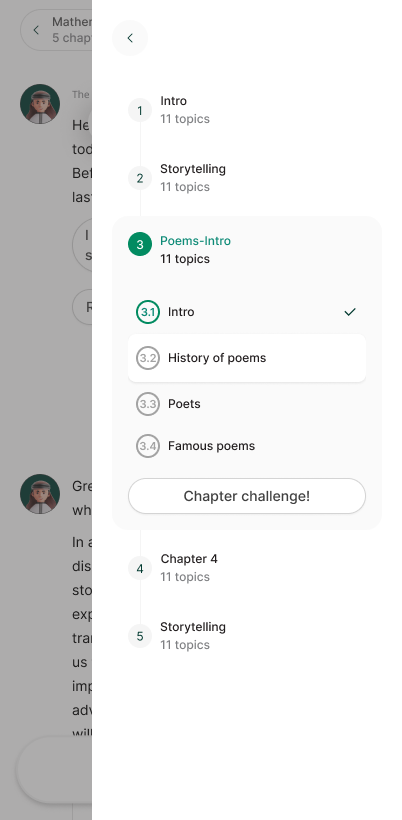
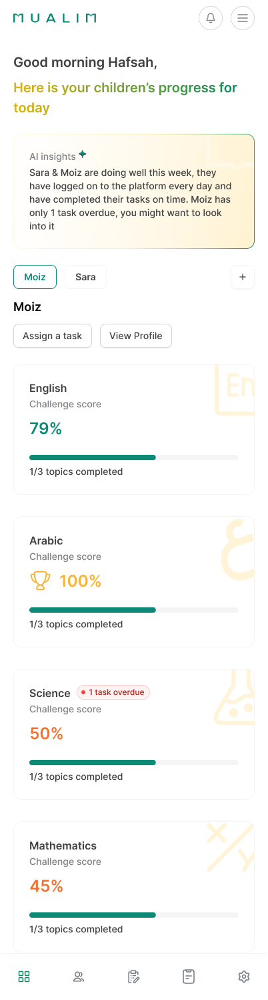
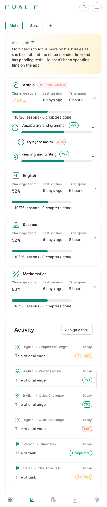
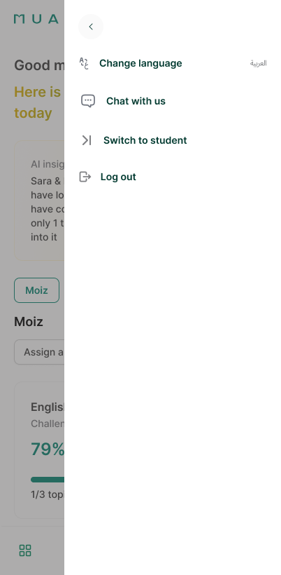
Final outcome
The shipped product balances what a child needs to stay engaged with what a parent needs to trust it — a single interface serving two audiences with very different relationships to the same learning experience.